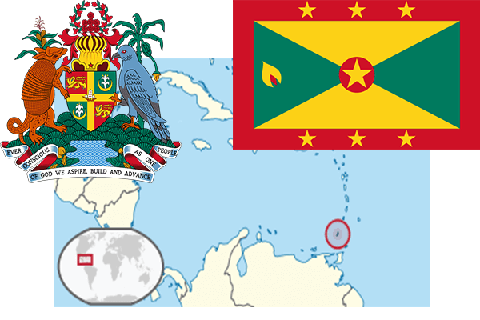

To`liq nomi: Grenada
Region: Markaziy Amerikaning janubiy-sharqiy qismi
Qonunchilik shakli: Konstitutsion monarxiya
Mustaqillik kuni: 7-fevral 1974-yil (Birlashgan Qirollikdan)
Poytaxt: Sent-Jorjes
Maydoni: 344 km² (dunyoda 222 -o`rinda )
Chegaradosh davlatlari: yo`q
Aholisi: 89 502 (dunyoda 197 - o`rinda, 2005 -yil roʻyxat)
Aholi zichligi: 672 /km²
Aholining o`rtacha yoshi: 65,25 yil ( 67,1 ayollar, 63,4 erkaklar)
Rasmiy tili: ingliz tili
Dini: Xristian
Pul birligi: Sharqiy karib dollari
Telefon prefiksi: +1-473
Internet domen: .gd
Xalqaro tashkilotlarga a`zoligi: BMT (1974 – yildan)
Dengiz va okeanlarga chiqishi: Karib dengizi
YIM: Butun: $ 823 mln Jon boshiga $ 9000 (2004 - yil roʻyxati)
Yirik shaharlari: Sent-Jorjes